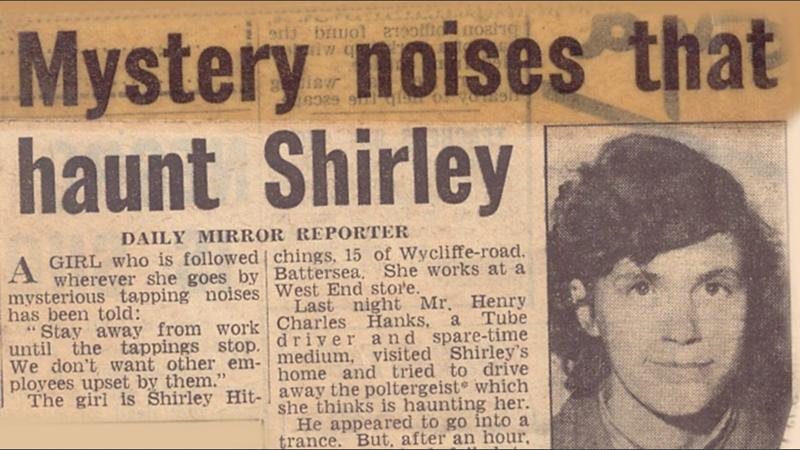
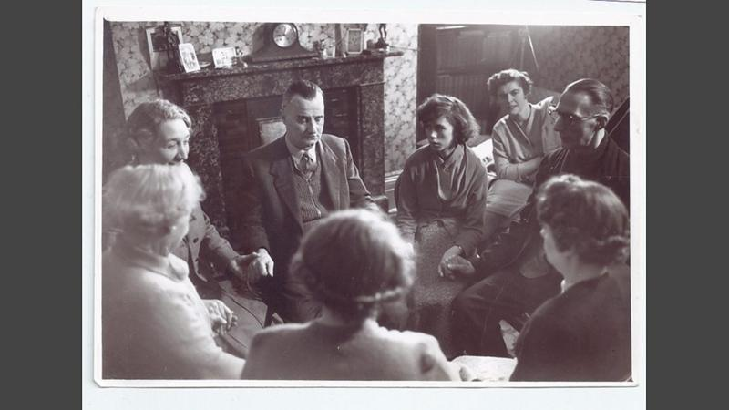
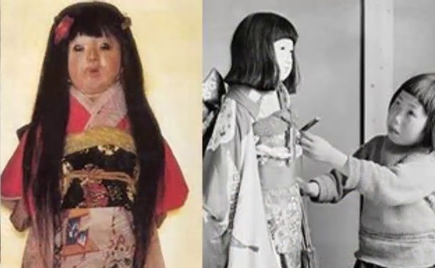
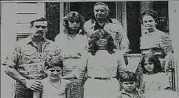

El misterio del fantasma de Battersea, la aterradora "aparición" que llegó a discutirse en el Parlamento británico
Todo empezó con una llave de plata que apareció sobre una cama en la casa de una familia cualquiera en un barrio cualquiera de Londres en 1956. Fue en Battersea, un vecindario en el sur de la capital británica. El número 63 de Wycliffe Road fue el escenario de una de las historias de fantasmas más extrañas e inquietantes que se conozcan. Se extendió por un período de 12 años y, en su apogeo, se convirtió en una importante noticia nacional, con titulares de periódicos sobre ruidos extraños, objetos voladores, exorcismos y comunicación fantasmal. Fue tanto el alboroto que hubo intentos por contactar al poltergeist en la televisión en vivo en horario estelar e incluso fue discutido por el ministro del Interior en la Cámara de los Comunes, la cámara baja del Parlamento.
Al periodista de la BBC Danny Robbins de la BBC le intrigó la historia, la investigó y acaba de lanzar el podcast "La historia del fantasma de Battersea". "Esperamos escuchar historias de fantasmas en antiguas casas señoriales o monasterios y castillos en ruinas, pero en un contexto urbano o suburbano los eventos inexplicables se sienten mucho más cercanos. La casa 'encantada' se parece a la nuestra, las personas afectadas no son diferentes a nosotros", afirma.
Battersea está bastante aburguesada ahora, llena de cafeterías y tiendas de moda, pero en 1956 era una zona de clase trabajadora más bien pobre. El número 63 de Wycliffe Road era el hogar de la familia Hitchings. El papá, Wally, tenía 40 y tantos años, y era un hombre alto y delgado que conducía trenes en el metro de Londres. Su esposa, Kitty, un poco mayor que él, era empleada de oficina. Su hija, Shirley, tenía 15 años, estaba a punto de comenzar la escuela de arte y trabajaba a tiempo parcial como costurera en el tienda Selfridges. Fue en ella en quien la extraña actividad en la casa pareció centrarse, y también el interés de los medios.

"La gente piensa que lo que se siente por las apariciones es lo mismo que en una montaña rusa o una película de horror... ¡tonterías!", le dijo Shirley al investigador psíquico Harold Chibbett cuando él se involucró en el caso en marzo de 1956. "El miedo de verdad es como una enfermedad; te va consumiendo hasta que llega un momento en el que no puedes caminar ni hablar ni siquiera pensar", añadió. Los otros residentes de la casa eran la madre de Wally, Ethel, un personaje colorido conocido localmente como Old Mother Hitchings y su hijo adoptivo, John, un topógrafo de unos 20 años al que Shirley consideraba un hermano. El primer indicio de que algo extraño estaba pasando fue una llave que apareció el 27 de enero de ese año en la cama de Shirley, sobre la almohada. Era una llave que nunca antes habían visto: plateada, adornada, antigua, el tipo de llave que se usaba en casas elegantes, no como la de los Hitchings. Shirley se la llevó a su padre, pero él estaba ocupado ayudando a bañarse a su madre, a quien la artritis crónica la había dejado incapacitada. Le pidió que la dejara en la repisa de la chimenea para ocuparse de eso más tarde, pero cuando fue a buscarla no estaba. Shirley le aseguró que la había dejado ahí; la encontraron otra vez sobre la almohada. La llave no abría nada en toda la casa. El incidente probablemente habría sido olvidado de no ser porque esa noche ocurrió algo que cambió sus vidas para siempre.
Aún no se sabe a ciencia cierta qué pasó en 63 Wycliffe Road, a pesar de múltiples teorías, tanto de creyentes como escépticos, expertos y curiosos. Esta historia extraña y emocionante sigue siendo tan fascinante para quienes creen en fantasmas como para los que no. Los primeros la usan para demostrar que los fenómenos paranormales existen realmente. Para los escépticos es un psicodrama sumamente intrigante. Si quieres muchos más detalles para formar tu propia opinión, te invitamos a escuchar "The Battersea Poltergeist" (disponible también en Apple) line Recuerda que puedes recibir notificaciones de BBC Mundo. Descarga la nueva versión de nuestra app y actívalas para no perderte nuestro mejor contenido.
La muñeca Okiku
¿Has visto alguna vez lo extrañas que son las muñecas tradicionales japonesas? No entiendo cómo los niños podían jugar con ellas, y por qué razón hay tantos coleccionistas que se empeñan en buscar algunos modelos en concreto que cuentan ya con más de 100 años de historia. ¿Será que están buscando la muñeca Okiku?
En Japón también tienen su propia muñeca diabólica, pero mucho más terrorífica que ‘Annabelle’. La historia de esta muñeca japonesa se remonta al año 1918, cuando Eikichi Suzuki, de 17 años, compró en Sapporo una muñeca para regalársela a su hermana Okiku de 2 años. Algunos meses más tarde, la niña pequeña murió repentinamente de un resfriado, y como es tradición en Japón, la familia colocó su muñeca favorita en el altar de la casa, para rezar a su memoria cada día. Desde ese día, la familia comenzó a notar que poco a poco el pelo de muñeca estaba creciendo, como si estuviera viva y fuera una niña de verdad.
En el año 1948 la familia de Okiku se mudó, y dejó la muñeca al cuidado de los monjes del templo Mannenji. Desde ese día, la muñeca sigue expuesta en este mismo lugar, y todavía es necesario cortarle el pelo con cierta frecuencia, porque no para de crecer.
El Exorcismo en Connecticut
En 1986 es el año en el que comienza el suplicio que una familia neoyorkina estaba por enfrentar, Philip el hijo mayor de la familia Snedeker es diagnosticado con cáncer linfático por lo que la familia decide mudarse a Connecticut donde se encontraba el hospital adecuado para el, por si no fuera poco con la enfermedad, la nueva casa que los estaba esperando es la peor parte de esta historia. Al rentar la casa venía con una condición, no tirar ningún objeto que se encontrara en el sótano ya que eran recuerdos, que eran conformados por estanterías de sierras y cuchillos, una camilla metálica giratoria y toda herramienta que un forense necesita para embalsamar cuerpos, pues el sótano fue una funeraria desde 1936 a 1980.
.jpg)
El sótano donde sería el cuarto de Philip y su hermano, estaba conjunto a la antigua funeraria, solo los separaban unas puertas corredizas. Philip desde un principio empezó a decir que había una presencia malvada en la casa, constantemente escuchaba una voz de un hombre en el sótano que le decía: “Philip ven aquí”. Su madre Carmen pensaba que eran alucinaciones por los medicamentos, pero no era el único que veía cosas, la hermana menor veía espíritus en el espejo. En una madrugada Philip y su hermano vieron entre la oscuridad a tres siniestros hombres, quienes los miraban fijamente y les susurraban algo espantoso, después los entes comenzaron a carcajearse y uno de ellos aventó uno de sus juguetes contra la pared, rompiéndolo en mil pedazos. En otra ocasión, Philip llegó a ver un niño vestido de Superman, después se enteraron que ese niño fue embalsamado en la casa y posteriormente enterrado con su traje del superhéroe. Uno de los más terribles episodios fue, cuando bajo la influencia de una entidad oscura, Philip trató de abusar sexualmente de una prima que vivía con ellos, por lo que Philip fue ingresado a un hospital psiquiátrico por 45 días. Pasaba el tiempo y lamentablemente por su situación económica, la familia no podía dejar la casa, incluso aunque las manifestaciones paranormales se volvieran cada vez más fuertes; las cosas se movían por si solas, había ruidos inexplicables y las camas vibraban; fue entonces que tuvieron que recurrir por ayuda al matrimonio de los Warren.
Cuanto los investigadores paranormales llegaron a la casa, Lorraine visitó el sótano a solas, y tuvo una visión de un hombre grande quien estaba manipulando y trasladando cuerpos sin vida, también practicaba con ellos la necrofilia (relaciones sexuales con los muertos). Lorraine se percató que no solo se enfrentaban a un espíritu atormentado, sino a un demonio, por lo que ella y su esposo Edward llamaron al Sacerdote Timothy Conlan, quien realizó un exorcismo para dar fin a esa entidad diabólica. Después de todo ese tormento, la familia Snedeker encontró la calma, Philip logró vencer al cáncer y ellos se mudaron de la casa. Atte. Edy Doo
el salvador
gip_hup dark599
emanuelcanas40@gmail.com